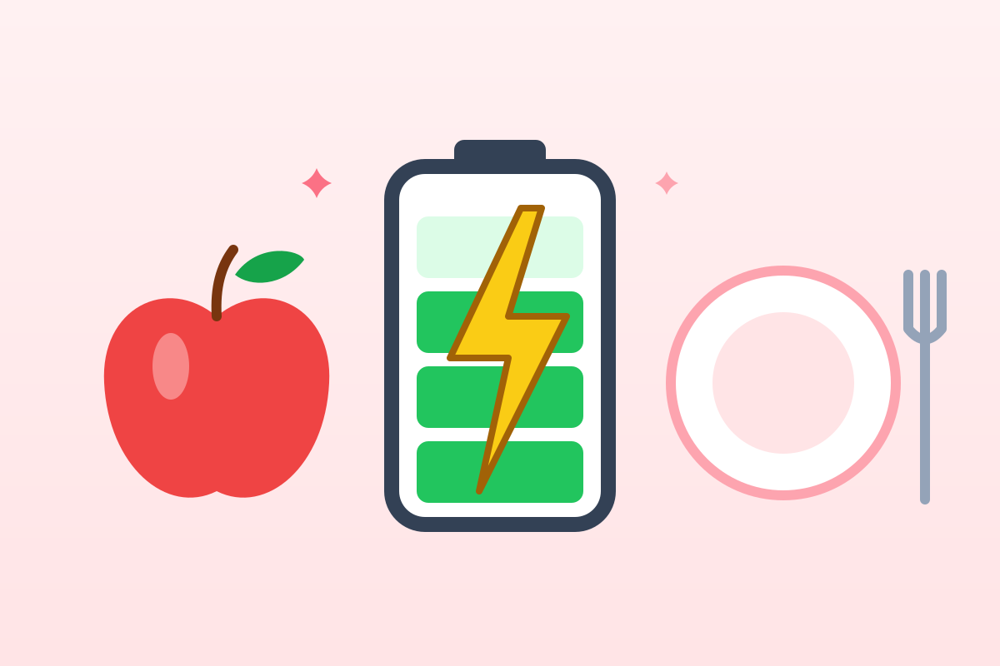

Энергия и калории без фанатизма
Калория — просто единица энергии. Понимать, сколько энергии нужно телу, полезно, а превращать каждый приём пищи в бухгалтерию — нет. Разбираемся, из чего складывается расход, и считаем ориентиры для себя.

Что такое калория
На упаковках пишут «ккал» — килокалории. Одна килокалория — это энергия, которая нужна, чтобы нагреть литр воды на один градус. Белки и углеводы дают около 4 ккал на грамм, жиры — 9, алкоголь — 7.
Если энергии с едой поступает больше, чем тратится, излишек запасается — в основном в виде жира. Если меньше — организм берёт недостающее из запасов. Это и называется энергетическим балансом.
На что тратится энергия
| Статья расхода | Доля | Что это |
|---|---|---|
| Базовый обмен | ≈ 60–70% | Работа сердца, мозга, дыхание, поддержание температуры — даже во сне |
| Переваривание еды | ≈ 10% | Энергия на усвоение пищи; белок требует больше всего |
| Движение | ≈ 20–30% | Тренировки и вся бытовая активность: ходьба, лестницы, уборка |
Самая изменчивая часть — бытовое движение. У человека, который весь день сидит, и у того, кто много ходит, разница может составлять сотни килокалорий в день — даже без спортзала.
Сколько энергии нужно вам
Ниже — расчёт по формуле Миффлина — Сан Жеора. Это одна из самых точных простых формул для взрослых, но и она даёт лишь оценку: у реальных людей отклонение может достигать 10% и больше.
Суточная потребность в энергии
≈ 1 870 ккал в день
Калькулятор для взрослых 18+. Подросткам, беременным, кормящим и людям с хроническими заболеваниями потребность определяет врач.
Индекс массы тела
ИМТ — это вес в килограммах, делённый на квадрат роста в метрах. ВОЗ использует его как простой скрининг для взрослых: 18,5–24,9 — норма, 25–29,9 — избыточная масса тела, 30 и выше — ожирение.
Калькулятор ИМТ
ИМТ ≈ 22
ИМТ не различает мышцы и жир: у спортсменов он бывает завышен, у пожилых — занижен. Для детей и подростков до 18 лет ИМТ оценивают по возрастным таблицам — это делает педиатр.
Игра: еда в минутах движения
Сколько нужно идти, чтобы потратить энергию одного пончика? Это не руководство к действию, а способ почувствовать масштаб. Еду не нужно «отрабатывать», а сладкое не делает вас «должником» перед тренажёром.
Перевести в минуты
≈ 250 ккал
Калорийность приблизительная и зависит от рецепта и размера порции. Расход рассчитан по таблицам метаболических эквивалентов (MET) и тоже примерный.
Как питаться без подсчёта калорий
- Собирайте тарелку по методу тарелки: половина — овощи, четверть — белок, четверть — цельные злаки. Подробнее — в руководстве по сбалансированному питанию.
- Пейте воду, а не калории: сладкие напитки почти не насыщают.
- Ешьте медленно и останавливайтесь, когда сыты, но без тяжести.
- Держите полезное на виду, а сладости и снеки — подальше.
- Двигайтесь каждый день: даже прогулка заметно увеличивает расход.